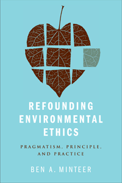

Explains environmental pragmatism and shows how to apply it to real world issues
Explains environmental pragmatism and shows how to apply it to real world issues


 Explains environmental pragmatism and shows how to apply it to real world issues
Explains environmental pragmatism and shows how to apply it to real world issues

|  |
Refounding Environmental EthicsPragmatism, Principle, and PracticeBen A. Minteerpaper EAN: 978-1-43990-084-0 (ISBN: 1-43990-084-1) |
"Minteer�s new book lives up to its title: Refounding Environmental Ethics. [Minteer] builds his search for environmental values on a firm foundation in social science, which is essential to his pragmatist approach. He builds on Dewey's conception of democracy to deepen and broaden the intellectual base for environmental pragmatism, supporting a pluralistic way to determine and pursue environmental values, and he intertwines his argument with case studies and real situations. [This] book will be especially useful for environmental ethics classes designed for environmental studies or environmental policy students."
—Bryan G. Norton,Distinguished Professor, School of Public Policy, Georgia Institute of Technology
Providing a bold and original rethinking of environmental ethics, Ben Minteer's Refounding Environmental Ethics will help ethicists and their allies resolve critical debates in environmental policy and conservation practice.
Minteer considers the implications of John Dewey's pragmatist philosophy for environmental ethics, politics, and practice. He provides a new and compelling intellectual foundation for the field—one that supports a more activist, collaborative and problem-solving philosophical enterprise.
Combining environmental ethics, democratic theory, philosophical pragmatism, and the environmental social sciences, Minteer makes the case for a more experimental, interdisciplinary, and democratic style of environmental ethics—one that stands as an alternative to the field's historically dominant �nature-centered� outlook.
Minteer also provides examples of his pragmatic approach in action, considering a wide range of application and issues, including invasive species, ecological research, biodiversity loss, protected area management, and conservation under global climate change.
Excerpt available at www.temple.edu/tempress
"Minteer's new book provides a comprehensive description and defense of policy-oriented environmental pragmatism. He shows how some of the most common arguments against pragmatism simply misunderstand and distort what pragmatists are saying, but he also makes substantive methodological and epistemological claims that will provoke creative responses from people who are sympathetic to a pragmatist position. At the same time, his closing chapter on environmental philosophy in an era of climate adaptation presents entirely novel reasons for rethinking traditional ecocentric commitments to intrinsic values. All in all, Refounding Environmental Ethics is a wonderful package�everything one could hope for in a book on environmental philosophy!"
—Paul B. Thompson, W. K. Kellogg Professor of Agricultural, Food, and Community Ethics, Michigan State University
"Minteer is one of the most prolific and well-regarded writers advocating a form of environmental pragmatism that appeals specifically to North American audiences and traditions. Now he has developed a single, coherent volume rigorously dedicated to explicating Deweyan environmental pragmatism and demonstrating its practical relevance vis-�-vis foundationalist alternatives in a series of applied settings, while also providing a systemic overview of the theory and history of environmental ethics to date. Refounding Environmental Ethics is a valuable book for scholars and students alike. Minteer's . . . rigorous research and solid writing [make] this a very fine volume indeed."
— Joe Bowersox, Dempsey Chair of Environmental Policy, Willamette University
"The book includes a discussion of work by Minteer and others, in which they sampled attitudes and beliefs on environmental questions, looking for conservation measures that the public would support because they already had opinions that would lead them to such support. Well documented, with appropriate, useful tables and charts. Summing Up: Recommended."
—CHOICE
"[T]he best articulation and defense of environmental pragmatism to date.... Minteer�s book is an important defense of environmental pragmatism and deserves a wide readership."
—BioScience
"This is an important book for anyone wanting to actually apply environmental ethics to public policy and environmental management."
—Environmental Values
"[A] provocative and important book on the current state of affairs in environmental ethics. It is provocative because his version of pragmatism is advocated in a novel and strategic fashion. It is important because he strongly makes the case that if environmental ethics is to survive as something more than an esoteric subdiscipline of an esoteric profession�that is, if it is to make a genuine difference for non-philosophers and non-humans, alike�then it must adjust to the current situation, which, to be blunt, is dire.... Minteer is deeply and rightly concerned about the present state of environmental ethics.... The closing chapter is a concise and powerful articulation of our current situation.... In his considerate book, Minteer exemplifies this democratic hope with nuance and intelligence�for which we all, humans and non-humans, should be grateful."
—Ethics, Policy & Environment
"[T]here is a great deal to appreciate in this volume... Minteer has organized and redrafted the content in such a way as to give an impressive internal coherence and consistency to the whole, and one gets a definite indication of a distinct and well worked out philosophical perspective.... [T]his is a well-crafted book that outlines a deeply sympathetic, engaged variant of pragmatic environmental ethics and should be read widely by philosophers on both sides of the divide."
—Environmental Philosophy
Acknowledgments
1. Foundations Old and New
2. Democracy and Environmental Ethics: A Justification
3. The Public and Its Environmental Problems
4. Intrinsic Value for Pragmatists
5. Natural Piety, Environmental Ethics, and Sustainability
6. Animal Rights and Environmental Ethics: A Pragmatic Reconciliation
7. Pluralism, Contextualism, and Natural Resource Management: Getting Empirical in Environmental Ethics
8. A Practical Ethics for Ecologists and Biodiversity Managers (With James P. Collins)
9. Conservation After Preservation
References
Index
Ben A. Minteer is Associate Professor of Environmental Ethics and Policy in the School of Life Sciences and is a Senior Sustainability Scholar in the Global Institute of Sustainability at Arizona State University. He is author of The Landscape of Reform: Civic Pragmatism and Environmental Thought in America, and the editor of Nature in Common?: Environmental Ethics and the Contested Foundations of Environmental Policy (Temple).
Philosophy and Ethics
Nature and the Environment
Political Science and Public Policy
© 2015 Temple University. All Rights Reserved. This page: http://www.temple.edu/tempress/titles/2058_reg.html.